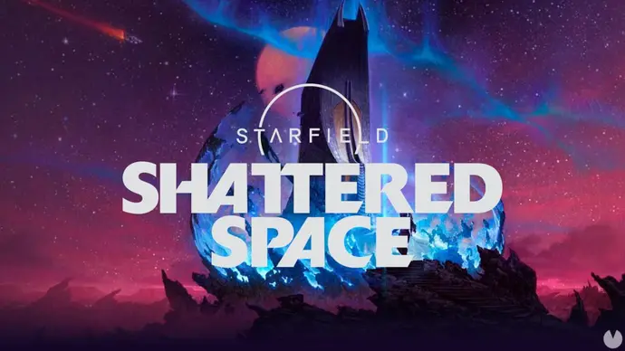

Starfield - Shattered Space é uma desilusão para os jogadores.
Postado 04 outubro 2024

A expansão Shattered Space para Starfield, lançada a 30 de setembro de 2024, tem recebido críticas pouco animadoras, sobretudo na plataforma Steam, onde está com uma classificação de apenas 38%.
Um dos principais pontos levantados pelos jogadores é a perceção de que o conteúdo é muito reduzido. Muitos completaram a história em cerca de três horas, o que, combinado com o preço de €29,99, causou insatisfação entre aqueles que esperavam uma expansão mais substancial.
Para além da sua curta duração, o DLC não introduziu novos companheiros e trouxe poucas novidades em termos de armas ou partes para as naves, elementos que muitos esperavam encontrar. Embora alguns jogadores tenham apreciado a densidade do mapa e a atmosfera mais detalhada, a falta de conteúdo foi bastante criticada.
O número de jogadores simultâneos também indica o desinteresse pelo DLC. Enquanto o jogo base atingiu o pico de 330.723 jogadores no lançamento no Steam, com Shattered Space esse número caiu para apenas 17.074. Isto pode sugerir que a expansão não conseguiu manter o nível de atração do jogo original, com muitos jogadores a não regressarem ou a completarem rapidamente o conteúdo.
Apesar de alguns elogios à exploração e ao cenário mais detalhado, este conteúdo adicional parece não ter introduzido o suficiente para justificar o seu custo.
Voltar